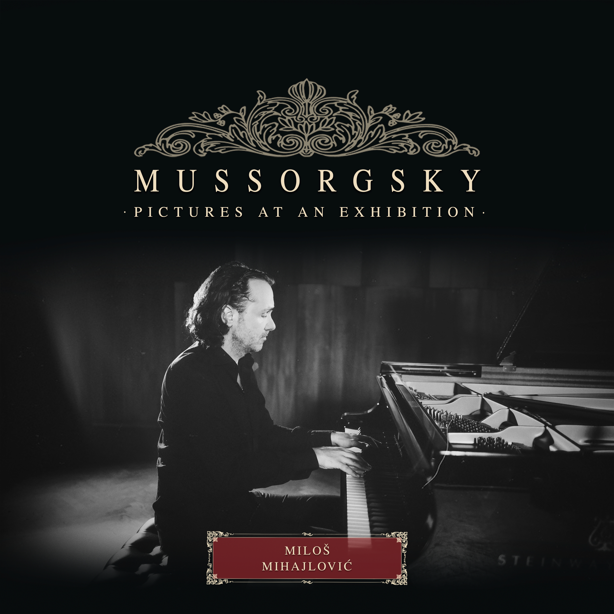

AboutWho am I and what I do
Miloš Mihajlović (born June 1, 1978, in Niš, Serbia) is a Serbian pianist and university professor.
EDUCATION
Miloš Mihajlović completed his undergraduate studies at the Faculty of Music, University of Arts in Belgrade in 1999, and obtained the academic degree of Magister of Arts in Music in 2005. He studied under the mentorship of Professor Nevena Popović. During his studies, he was recognized with the Emil Hajek Fund Award for the most talented young pianist and the Olga Jovanović Fund Award for the most promising young pianist. His artistic formation was further enriched through masterclasses and consultations with distinguished pedagogues such as Sergei Dorensky, Alexander Shtarkman, and Michel Dalberto.
AWARDS AND RECOGNITIONS
Miloš Mihajlović has won top prizes at a number of international piano competitions. Highlights include:
· Southern Highlands International Piano Competition, Sydney/Bowral, Australia (2009)
First Prize – Absolute Winner
Special Prize for Best Performance of a Chopin Etude
· Stanojlo Rajičić Fund Award, Serbian Academy of Sciences and Arts, Belgrade, Serbia (2005)
For the most distinguished recital of the concert season
· Grand Konzerteum International Piano Competition, Athens, Greece (1999)
Absolute Winner
Special Prize for Best Interpretation of a Chopin Composition
· Nueva Acropolis International Piano Competition, Madrid, Spain (1998)
First Prize
· Petar Konjović International Piano Competition, Belgrade, Serbia (1997)
First Prize
· Laureates of Orpheus International Piano Competition, Belgrade, Serbia (1996)
Winner of the competition
· Fryderyk Chopin Young Pianists Competition, Rome, Italy (1996)
First Prize
· Tortona International Piano Competition, Tortona, Italy (1995)
First Prize – Absolute Winner
· Torino/Moncalieri International Piano Competition, Italy (1995)
First Prize
PERFORMANCE HIGHLIGHTS
Miloš Mihajlović has performed at the following distinguished venues and festivals:
· Yuri Bashmet Festival, Yaroslavl, RUSSIA
· Yuri Bashmet Festival, Khabarovsk, RUSSIA
· Great Hall of the Mariinsky Theatre, St Petersburg, RUSSIA
· Great Hall of the Tchaikovsky Conservatory, Moscow, RUSSIA
· Great Hall of Kolarac Foundation, Belgrade, SERBIA
· Sava Centar – Great Hall, Belgrade, SERBIA
· National Philharmonic Hall, Warsaw, POLAND
· BEMUS Festival, Belgrade, SERBIA
· NIMUS Festival, Niš, SERBIA
· Act City Concert Hall, Hamamatsu, JAPAN
· Westminster Hall, Nice, FRANCE
· Opéra Comédie – Opéra Orchestre National Montpellier, Montpellier, FRANCE
· Théâtre des Champs‑Élysées, Paris, FRANCE
(among others)
Miloš Mihajlović refined his artistic perspective through collaboration with prominent conductors and artists. Notable names include:
· Yuri Bashmet – conductor, violinist, violist
· Nemanja Radulović – violinist
· Uroš Lajovic – conductor
· Davorin Mori – conductor
· Sergei Dorensky – pianist
· Alexander Shtarkman – pianist
· Michel Dalberto – pianist
· Mladen Jagušt – conductor
· Carlos Alvarado – conductor
· Angel Šurev – conductor
· Dejan Savić – conductor
· Darinka Matić Marović – conductor
· Anatolij Novicki – conductor
· Grant Foster – composer
TEACHING CAREER
· Full Professor, Piano Division, Faculty of Music, University of Arts in Belgrade, Serbia, since June 2023
· Associate Professor, Piano Division, Faculty of Music, University of Arts in Belgrade, Serbia, April 2014 – June 2023
· Assistant Professor, Piano Division, Faculty of Music, University of Arts in Belgrade, Serbia, April 2005 – April 2014
· Head Teaching Fellow, Piano Division, Faculty of Music, University of Arts in Belgrade, Serbia (under Professor Nevena Popović), 2001–2005
· Head Teaching Fellow, Academy of Arts in Banja Luka, Bosnia and Herzegovina (under Professor Nevena Popović), 2000–2001
I do MAGIC.I do... MUSIC!
I take pride in delivering only the best of me, so I can share my passion with you.
Stay tuned!
Enjoy your stayinghave a nice time
Chopin
4 SCHERZI

Mussorgsky
Pictures at an exhibition

Rachmaninoff: Moments musicaux op.16
No. 3 in B Minor - Andante cantabile
P.I.Tchaikovsky
Piano concerto No.1 I movement
P.I.Tchaikovsky
Piano concerto No.1 II movement

P.I.Tchaikovsky
Piano concerto No.1 III movement

Piano Instrumental
Somewhere over the rainbow

F.Chopin
Ballade No.1 op.23 in g minor
F.Chopin
Ballade No.3 op.47 in A-flat Major
Iva Ikon & Miloš Mihajlović
Once I Was Loved / Cover
F.Chopin
Andante Spianato & Grande Polonaise Brillande op.22
Ethno Essentials
ALBUM

Ethno Essentials vol. 2
ALBUM

This is Balkan
ALBUM

Essentially Ethnic Piano
ALBUM

Jasna Kočijašević & Miloš Mihajlović
Kraj tanana šadrvana
S.Rachmaninoff
Prelude op.32 No.12

W.A.Mozart
Sonata a-minor K.310
"Music is a funny word. Some people think music means how it sounds. Then... you dig deeper - it's really how it feels."
"Serb pianist Milos Mihajlovic earned a standing ovation from the Clubbe Hall audience in addition to his $20,000 prize when he was named the winner of the 2009 Southern Highlands International Piano Competition (SHIPC) on Saturday evening. The judging panel took only minutes to declare Mihajlovic the winner after the four finalists’ concerto performances"
"His playing is shaped by an assured technique and genuine interpretive insights, however, his credentials are appreciated on their own merits, and the risks are justified!"
"Equally impressive, though, is his respect for the emotional nuances of the music, every shift in mood rendered poetically but without distorting the musical continuity. Mr. Mihajlović’s playing proves as eloquently as that of any pianist in recent memory that the greatest test of a musician’s artistry is to perform in a manner that allows the music at hand to be heard on its own terms."
"With his playing of these pieces, Mr. Mihajlović rivals the best performances of this repertory by allowing the listener to hear, unencumbered, the voice of a composer!"


@ drop a line
info@mihajmi.com
🏠 Letters to: